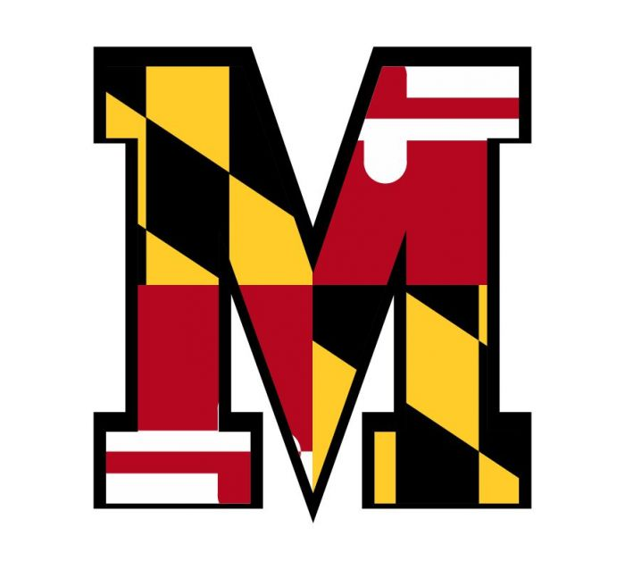
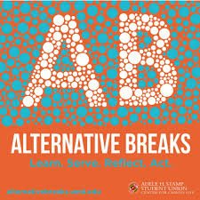

Education

Overview -
From fall 2016 to spring 2019, I attended the University of Maryland, College Park and received a Bachelor of Science degree in computer science (and yes I graduated in three years) with an upper level concentration in mathematics. My choice to pursue UMD for my degree hindered on a few reasons:
Orginally, being from New York, I wanted to explore more of the country and find myself somewhere unfamiliar. Being a little bit uncomfortable can be a good thing, and has definitely helped me further my social awareness as well as sky-rocket my confidence. Maryland has offered such unfamiliarity through a largely diverse cast of colleagues who have all broadened my perspectives on life as well as through giving me a chance to prove my independence while still being not too far from home.
Additionally, from the time I was in 10th grade I knew that I wanted to study computer science. I am thankful for the leap of faith I took in high school to sign up for my first computer science course, not knowing at all what it was truly about. My creativity was beaming as I was quickly fascinated by the infinite possibilities that I felt I had at my disposal. I was the type of student who was so interested that I would ask questions beyond the scope of the class, stay after school everyday to work on personal projects, and practically became the teacher's in-school son for the next three years. My teacher had faith in me and praised my natural ability to code
so much so that she wanted me to take part in programming competitions every year at St. Joseph's College. Because of her, I was enabled to accelerate in my study of computer science and was all the more ambitious transitioning to higher education.
I was even more-so grateful for the opportunity to take a computer science course at all during high school. I went to a relatively small school with a graduating class of about 180 students. General interest in computer science was low. I'm extremely fortunate that my AP Java course was even available to take since there wasn't enough demand for it. I was one of only two people enrolled in the course. The class would not have been able to run had Mrs. Thompsen not fought for our education. She was a huge inspiration for me.
So one of the biggest reasons I wanted to go to UMD was for its excellent computer science program. UMD is nationally recognized as an elite computer science school and is only continuing to get better. The coursework was rigorous and relevant, I learned a wide variety of programming languages and paradigms, I excelled in understanding my coursework - earning me a spot on the Dean's list every semester, and I've taken away important life skills necessary to thrive in this world. From my experience at UMD, I personally believe that I couldn't have received a much better education anywhere else.
Work -
During my time at school, I improved upon my technical skills with a wide variety of projects for a number of different courses. I chose to highlight a few here:
In my data structures class, I learned about complex structures by writing their implementations. This angle of learning was really effective because in order to implement these structures, you're forced to know the fine details of how each structure should work. Some examples of structures I had to code were priority queues, threaded AVL trees, patricia tries, KDTrees, and PRQuadtrees.
For my database design class, the coursework was very rigorous having quizzes before every lecture that were extremely detail-oriented and based on long textbook readings. In addition, the projects were interesting and helpful in reinforcing the material such as practice with writing complex SQL queries, writing trigger code, implementing a B-Plus Tree, and creating a web-application that I gave its own spotlight in the projects section below.
I've designed several more projects throughout my undergrad but to list just a few more that stand out to me, I wrote a mini C compiler and interpreter, I wrote a polynomial time 2-SAT solver, I wrote a maze solver that effectively uses thread pools to find solutions quicker, and lastly I wrote a concurrent analyzer that reads a csv file of tweets and creates a trending list based on a provided criteria/category with the help of the Hadoop framework.

Extra Curricular -
In tandem with my academics and coursework, most of my extra curriculars involved volunteer work or community service. I initially joined Relay for Life UMD my first year and was part of the activities committee. We helped to plan and coordinate the events and fundraisers to raise money to fight cancer. Joining this organization was a special and meaningful way to start my college career. I really enjoyed being part of a community where everyone involved was super kind, considerate, respectful, and everyone shared the common goal of wanting to make a positive difference in the world. It was a truly humbling and touching experience.
After participating in Colleges Against Cancer, I also joined an organization called Alternative Breaks which was an equally important and moving experience as well. The goal of the group is to raise awareness of community-wide and global issues and to encourage students involved to become more active citizens. I was fortunate to spend ten days of my winter break (January 2019) in the Bahamas with an awesome group of thirteen new friends. I entered with little knowledge about environmental issues and walked out of my trip feeling well educated and more inclined to be a better role model and practice more sustainable methods to help the Earth.
My hobbies outside of school aside from any organizations I joined include playing basketball or video games, listening to music, watching YouTube or movies on Netflix, and spending time with friends and family.
Experience
Teaching Assistant for UMD Computer Science Department
Overview -
During my time at UMD, I had taken on the role of a TA for 4 semesters (Spring 2018 - Spring 2019 including summer), all working under the same professor, Anwar. Depending on the professor, some TAs may have little to large influence on the class. Anwar was a trusting, lenient boss and gave me and my peers a lot of responsibility which I was greatly appreciative for. In my role, I often dealt with sensitive and critical tasks such as writing exam questions or grading quizzes/exams which some professors may not always permit their TAs to handle on their own or at all.
My favorite part of being a TA was leading a 50 minute discussion section for about 30 students every week. The way this would work was a small group of TAs would compile a list of topics that every teaching TA needed to talk about for the given week, but I as a teaching TA was given the creative license to present the topics in my own unique style. I gave my discussions my full energy - probably even more than my own schoolwork at times. I always came prepared to class with examples and detailed explanations for my students, while also being active outside of class too, posting resources such as worksheets that I wrote for them to my github. I loved interacting with my students, guiding them through the course, bringing the material to life - demonstrating its importance and relevancy, and also building a connection with them through getting to know them at times. From teaching, I learned a lot about myself as well as learned how to improve myself. Everyone is different and teaching effictively isn't an easy task, but figuring out the best way to reach as many students as possible has made me a more effective communicator as well as a more confident speaker.
Additionally, I held office hours every week where I had to try to find the gaps in student's learning and guide them through course projects. I've had to help so many people find errors in their code that my debugging skills have improved drastically.
Teaching at Maryland was an incredible overall experience for me. I taught two different courses at UMD:
CMSC330: Organization of Programming Languages -
The main objective of the course is to introduce three very different programming languages to students:
- Ruby an imperative dynamically typed object-oriented langauge
- OCaml a functional statically typed language
- Rust an interesting hybrid of sorts with a focus on its improvement over C as a safer language
Students should realize the strengths and weaknesses of programming languages and their specific features. The course also covers a wide variety of topics in addition such as CFGs, parsing, and operational semantics - an introduction to compilers and interpreters, DFAs, NFAs, and regular expressions - an introduction to computational theory, and even basic concepts in cyber-security.
One of my major contributions to the course was a Rust project I brainstormed, programmed, debugged, tested, and outlined, designed to ease students into learning Rust while practicing their algorithmic skills. The process for developing this project from complete scratch was one of the most difficult challenges for me as a TA. Since the course had only just switched from teaching Prolog to Rust, I had to quickly become well-versed in a new language and compose a new class project highlighting the most important features of the language. While challenging, this project is also one of my proudest moments as a TA because I believe I was successful in creating a comprehensive, full-scale project in a short and stressful time-span.
CMSC132: Object-Oriented Programming II -
The goal for this course is to introduce higher level Java concepts such as inheritance, significant data structures such linked-lists, trees, and graphs, and big ideas such as recursion, search algorithms, threads, and concurrency.
Similarly to the other course, my biggest contribution to this course was designing a concurrency project from scratch, designed to make students more comfortable with threads and help them understand the non-deterministic nature of concurrent programming.
While teaching this course over the summer, I took my role very seriously and bent over backwards offering my help to students. I would stay several hours past my normal office hours and went to work on days that I didn't have to as a way to provide extra help to those students because I truly cared about their ability to master fundamental computer science concepts going forward. Despite giving myself a lot of extra hard work, it was a rewarding experience as the students showed lots of appreciation towards me and outpourings of love in their end of semester evaluations of me. Some examples were:
Daniel was super helpful. During office hours, he would help us find bugs in our code so that we could learn how to fix them.
Cares about the student's ability to learn the concept.
Daniel in particular would pinpoint problems and steer me in the right direction within 5 minutes of looking at my code.
Daniel really displayed an interest in making sure we fully understood the material. He held review sessions in office hours the day before exams that were very thorough and made me feel much more confident heading into the exam. He is very knowledgable about CS and I would like having him as a TA in all of my classes going forward.
Review discussions were more helpful in reinforcing the content than the teacher.
Daniel is pretty good at explaining the material and how to debug your code.
Daniel has made this class far less stressful than it would've been without him ... he was very well tempered, steady, and knowledgable, which is great for students who are overwhelmed and confused by a project.
He gave away no hints, but helped you find the methods and patterns yourself which is great for learning how to understand project requirements.
Projects
Android Platformer Game
Sister Rescue
was my team's final project of CMSC425: Game Programming. We had the option to make any type of game we wanted and we chose to create a 2D platformer game that could also be played on a mobile phone. The project was designed with the Unity game engine and the scripts for the game were written in C#.
In the game, you move and jump around Mario-style, shooting enemies such as evil bunnies roaming around or evil bats that chase you if you get too close. To complete a level, you must first collect all the gems scattered around the terrain and then reach the finish line. Once you get all the way to the last level, you must fight the game's final boss, a giant knight who throws fireballs at you and spawns bats to attack you.
As a team, we divided the work as evenly as we could. One member focused mainly on making the game compatible with Android. Another member mainly focused on level and asset design. I mainly focused on the enemy AI of the game. Overall I really liked collaborating with my group and we were able to help each other accomplish our tasks together in a timely fashion.
Written May 2019
Matchmaker Website

The Organ Trail matchmaker site was a class project for CMSC424: Database Design. The back-end was written in Java and utilized PostgreSQL for queries to the database. I had to run the server locally for testing by using web server software, Apache Tomcat.
The goal was for us to implement functions that interact with the database, add a page to the site, and connect the front-end to the back-end. I look back at this project as an important one as well as one of my favorite class projects because it forces you to view the project from a full-stack developer perspective. Most class projects I've written focused on only one component while this one helped me to see for the first time precisely how all components come together to make a full-scale project.
The functionality of the project was simple (and silly). Users can go to the site and register an account, putting their information in the database. Then users can also request an organ for transplant or offer to donate an organ and the site will pair up people in need of an organ to compatible donors based on criteria such as blood type, as well as assign them a specialized doctor.
Written March 2019
Chess GUI Project

Chess was a personal project that I worked on by myself after taking an artificial intelligence course and wanting to prove that I had truly learned the material well enough because the class did not have as many projects as I would have liked. I decided to design the program in Java because of my familiarity with Javafx.
I started by creating the GUI using a grid pane for the board. Each square of the board was a label and I wrote a method to color the board in alternating fashion at the start of the game. I then found chess pieces online and photoshopped them each out individually to add to the board.
After designing the look of the game, I had to add player functionality. Each chess piece is its own object, possessing a rank and coordinates. When a piece is clicked on, a method is called returning a list of coordinates the piece can move and another method takes those coordinates and highlights the boxes that the piece can move to. When a label is clicked on and it is currently highlighted, the current selected piece is moved to its new position.
The game utilizes a state design pattern that permits player activity only when the state of the game is the player's turn. The functionality of certain methods such as piece movement is dependent on the state of the game.
Once functionality was complete, I had to make the computer perform smart decisions for each of its turns. I started with the alphabeta search algorithm which is a more advanced depth-first search because the algorithm prunes subtrees that it knows won't be useful to look at (side note: I was proud of myself because I coded it without looking it up online). I tested out a few methods of evaluation which scored the boards based on which formations were most advantageous. While it worked great, the problem was that the computer could only look to a certain depth of the search tree without taking an extremely long time to make a decision. Lowering the depth of search would improve speed, but was costly in intelligence and increasing the depth would worsen speed, but dramatically improve intelligence.
The last step of the process was finding a way to achieve both high speed and intelligence. The computer needed to learn and memorize. I set up the game so that the computer could play against itself. Each unique board setup would be encoded, scored, and recorded. That way, if a board setup has already been seen before and thought about by the computer, the search computation could be avoided entirely and the computer could lookup with a hashmap its preferred move.
Written June 2018